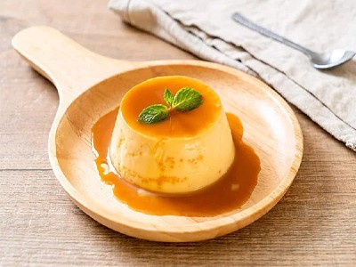

|  |
Food's name: Flan▸ Ingredients:
▸ Time to prepare: 60 minutes ▸ Approx quantity: 30 jars |
▸ Detailed recipe:
Step 1: Make caramel:
- Put sugar and water (sugar: water ratio is 3:2) into a light-colored pot for easy viewing.
- Simmer until the sugar dissolves. Then use chopsticks to stir and cook for another 5-10 minutes until the sugar turns brown, then turn off the heat.
- Add a tablespoon of fresh lemon juice to give the flan a distinctive aroma.
- Because caramel hardens very quickly, you need to quickly put a thin layer of caramel into the mold while it's still hot. Then put the mold in a cool
place for the caramel to cool and harden.
Step 2: Make flan:
- Put the eggs and sugar into the bowl, stir gently, trying not to create air bubbles, stir until the sugar has dissolved.
- Heat the milk on the stove, do not boil but only about 70°C (the milk just needs to be slightly hot and foam around the pot), and then turn off the stove.
If the milk is too hot or boiling, it will spoil the milk.
- Pour the egg mixture prepared from the previous step into the pot of fresh milk and beat well, gently to avoid foaming and the eggs are lumpy.
Check the mixture again to remove any lumps. Beat the egg-milk mixture.
- Add vanilla and stir well. Use a sieve to strain the mixture once so your flan is smooth and fragrant.
- Pour the filtered mixture into the cups for the next step.
Step 3: Bake or steam cakes:
- Baking: Bring 1 pot of water to a boil, pour it into a baking tray in the oven, and then place the cake pan in the baking tray filled with water. Put in the
oven for 40 minutes (depending on the size of the mold or small to adjust the baking time accordingly).
- Steaming: Put the flan cups into the pot and then cover the cups with a towel to prevent the cakes from pitting when the water in the steaming pan
drops down. Set the heat to medium and occasionally use a towel to wipe the water off the pot. Steam for about 30-40 minutes, the cake is cooked.
- When eating, you can turn the cake upside down on a plate or medium bowl, add a little coffee, coconut milk, or fresh fruit and ice to make your cake
much more delicious.
▸ Calories and related information: